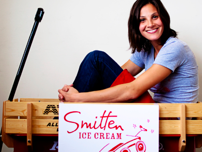

Ever since Robyn was a little kid growing up in Wayland, Massachusetts, her mom told her that she had two stomachs; one solely reserved for ice cream, and she still believes it!
At 16, Robyn’s family left New England for the Golden Gates of Marin County, but her California girl status would not last long. Robyn headed back east to attend Williams College, majoring in psychology and playing shooting guard on the varsity basketball team. After Williams, Robyn, still unsure of her path, became a strategy and management consultant for Monitor Group, where she worked for the next four years in Boston, New York, and Paris.
With the certainty that a corporate career was not a good fit, Robyn returned to the West Coast and attended Stanford Graduate School of Business, focusing on entrepreneurship. With her “ice cream stomach” growling, she began drawing up plans for and tinkering with a prototype ice cream machine in her backyard. Naturally, she quickly garnered the nickname “The Ice Cream Girl,” which was fine by her!
Upon graduation, Robyn’s sweet tooth sent her to a short course at Penn State University that focused on commercial ice cream production and distribution. It was there that she learned just how “far from the cow” ice cream production had come and solidified her belief that she could - and would - do better. She spent the next several years and her life’s savings inventing BrrrTM, her patented, individual batch ice cream churner that uses liquid nitrogen to yield the smoothest, creamiest, and purest ice cream on the planet - no unpronounceable ingredients allowed.
